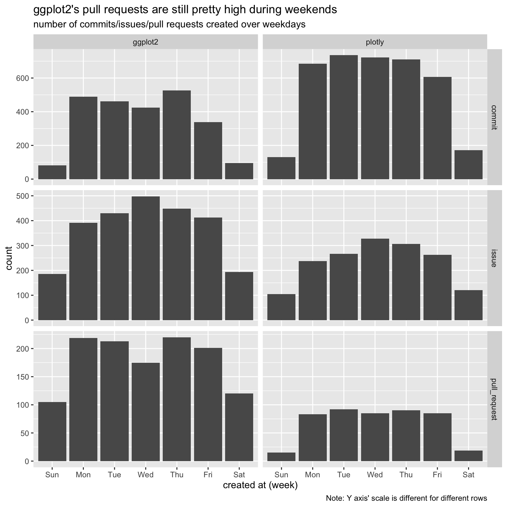
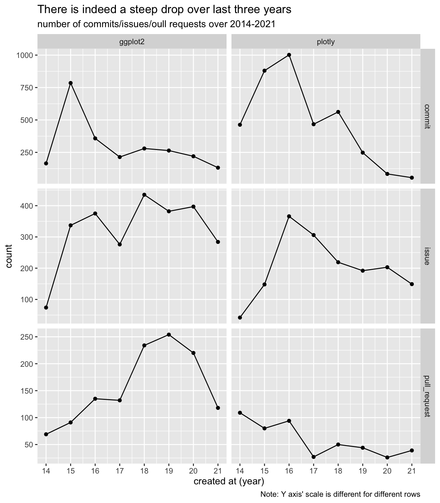
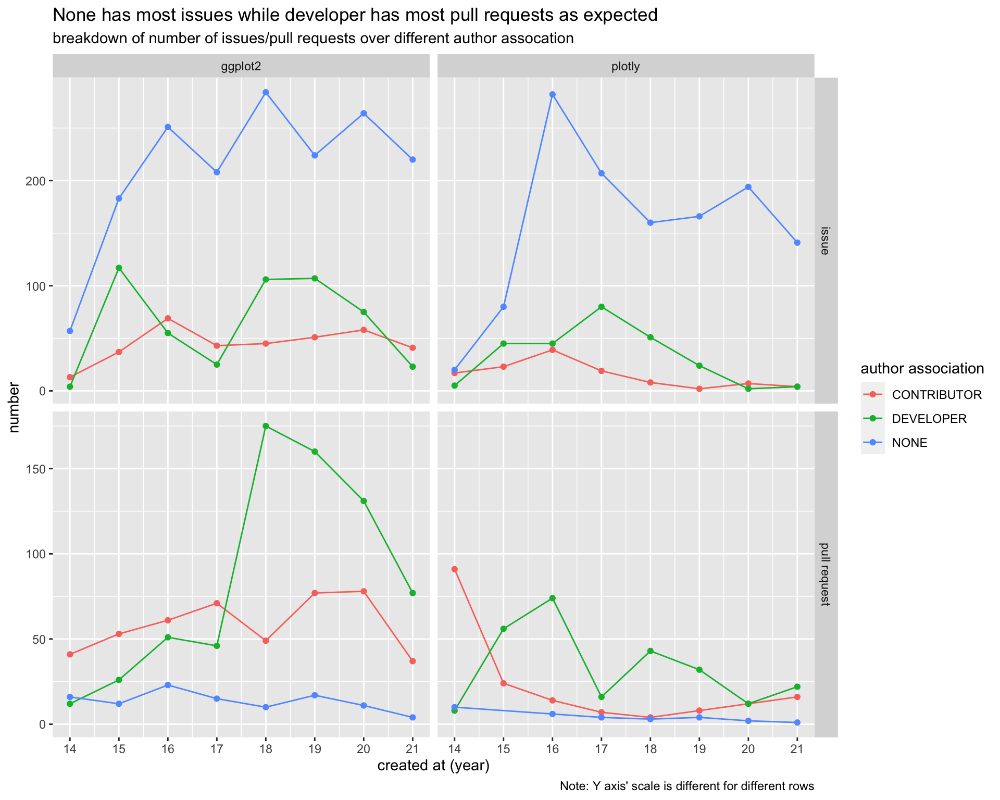
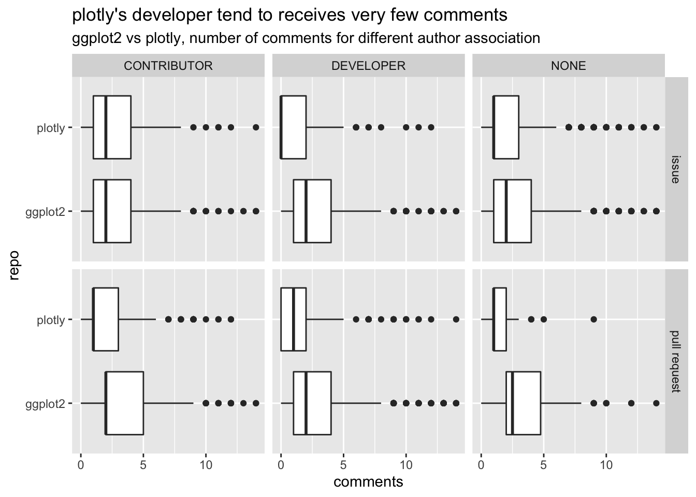
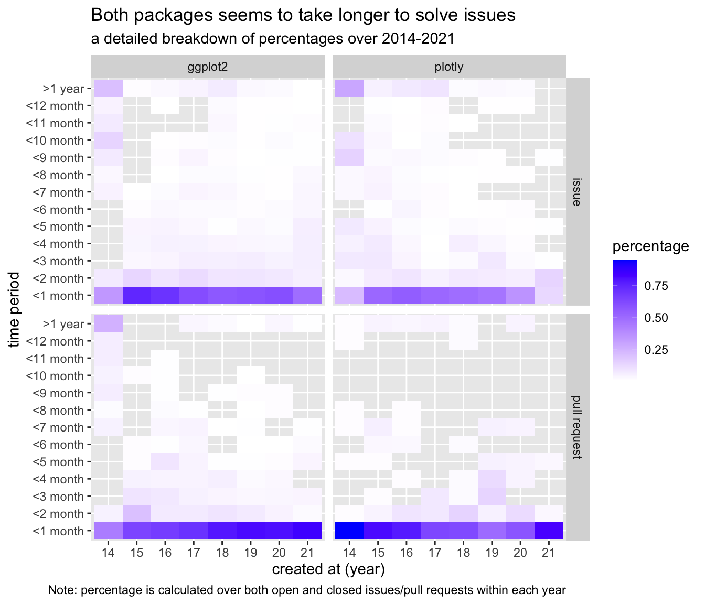

Chapter 5 Results
5.1 Quantity Pattern
We firstly focus on the quantity pattern of these two packages. And then explore some rules for pandemic.
Users of Github prefer to create pull requests, issues and commits during weekdays rather than weekends. The number of all pull requests, issues and commits for plotly are smaller than ggplot2. ggplot2 is more popular than plotly on Github. 
For plotly, the number of issues and commits first increases and then has a decreasing trend after 2016. And for number of pull request of plotly, it has a decreasing trend. For ggplot2, the number of issues, pull requests and commits have a fluctuate process.
Users are more interested in the package when it newly came out. After pandemic, less focus is put on these two packages.
In particular, the number of commits for ggplot2 has a significant period fluctuation during time.

Due to the same meaning in the definition of “COLLABORATOR” and “MEMBER” in these two packages, we combine these two classes into “MEMBER”. Issues are mainly created by common users of these packages. Pull requests are mostly created by members of these packages. Due to pandemic, these packages are not as popular as before. 
Both packages have similar distribution shape for all author associations and they all have long right tail. And there is a small peak for comments equal to 10 for plotly. Comparing two packages, ggplot2 is more likely to have a heavy tail.

Issue and pull request can have two states, open and closed, which indicates if the issue has been solved or if the pull request has been accepted/rejected. We can see that both packages have very few open pull requests but plotly has far more open issues than ggplot both in relative and absolute scale.
Let’s first dive into the open issues. We can see that the percentage of “open” issues (issues whose states are still open) increases for plotly, especially for the past three years. Although we would expect some increases since earlier created issues are given more time to solve, yet plotly’s increases is substantial (from 30%+ in 2019 to 50%+ in 2020 and to 70%+ in 2021). When compared to ggplot, plotly’s percentage of both issues and pull requests are much higher even though plotly has fewer issue and pull requests than ggplot in absolute terms.
Next, let’s move our attention to closed issues and pull requests. We calculate issues and pull requests’ solved time (which is defined as close time - create time) and divided the time into periods of 30 days (or 1 month). And we can see most of issues/pull requests were closed within one month but plotly seems to have larger percentage of issues that were open for more than one year.
Breaking down the percentage over 2014-2021, we can see that both packages seems to having a trend of taking longer to “close” their issues. But the pattern is very different for pull requests, the percentage of pull requests closes within one month increases for the past several years. The contrast is most spark for plotly in 2021, only about 25 percent of issues are closed within two months, but over 80% of pull requests are closed within one month. 